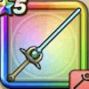

ひかりのタクト
攻略班 6.0点 / キアリクバギマいやしのかぜザオラル
くわしい特徴
【レベル別習得スキル】 Lv1キアリク（消費MP：10）仲間全員の麻痺をなおす Lv10バギマ（消費MP：15）はげしい竜巻で敵全体にバギ属性の呪文小ダメージを与える Lv15いやしのかぜ（消費MP：26）味方全体のHPを回復する Lv20戦闘終了時にMPを10回復する Lv30ザオラル（消費MP：25）仲間ひとりをHP50%で復活させる Lv35エレメント系へのダメージ+10% Lv40とくぎHP回復効果+20% Lv45さいだいMP+12 Lv50かいふく魔力+12 【限界突破スキル】 1凸じゅもんダメージ+5% 2凸じゅもんダメージ+5% 3凸じゅもんダメージ+5% 4凸じゅもんダメージ+5%